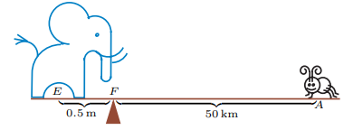

Mass points is a mathematical technique which involves assigning "masses" to vertices of a triangle.
Consider this: there is a see-saw in a playground with 5 rocks on 1 end and 10 rocks on the other end. You would expect the see saw to tip towards the 10-rock side
And you would be correct; but this is only because the "balancing point" of the see-saw(it's called the fulcrum) is exactly in the middle.
However, this isn't always the case. As we move the fulcrum of our see-saw closer to the 10-rock side, we would become closer and closer to balancing out the two sides of the see-saw.
Where should we put the fulcrum exactly to balance it out? Ancient mathematicians like Archimedes investigated this quesiton thoroughly; as it turns out, the answer depends only on the ratio of the two weights on both ends. He found out this: if one side is twice as heavy as the other side, it should be twice as close to the fulcrum. So, our fulcrum should split our see-saw of rocks in a ratio of 2:1!
More generally, this idea works for masses of any ratio(3:1, 4:1, 3:2, etc.). And it also works in reverse: given distances to the fulcrum, we can create appropriate weights for both ends of our see-saw.
In a real geometry problem, it would look something like this: ratios give us masses, which give us more masses, which gives us more ratios to work with! Soon enough, we have all the ratios we would ever need in a model.
Why should you care? Not only is this is a useful idea for solving geometry questions, but it also presents a stunning connection between mathematical and physical principles, something that doesn't happen often. Mass points also relate to ideas like barycentric coordinates, which have a wide variety of real-life applications.
Interested in learning more? Keep reading!
Amazing article which showcases the true power of mass points.
Rigorous introduction to the mass points technique.
Mass points on Wikipedia.